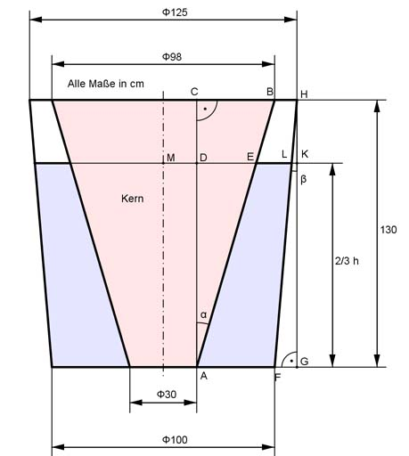

Aufgabe 291 In der voll ausgegossenen Form für Bleiguss steht das fertige blaue Gussteil mit einer Dichte von 11,34 kg/dm³ nach dem Erkalten auf einer Höhe von (2/3) * h. Welches Volumen V hatte das flüssige Blei mit einer Dichte von 10,64 kg/dm³?  V = blauer Kegelstumpf K1 - roter Kegelstumpf K2 2/3 * h = 2/3 * 130 cm = 86,67 cm = AD Im Dreieck ABC gilt: 98 cm - 30 cm CB = --------------- = 34 cm 2 CB 34 cm tan α = ---- = ----------- = 0,2615 --> α = 14,65° AC 130 cm Im Dreieck AED gilt: DE tan α = ---- | * AD AD DE = tan α * AD = tan 14,65° * 86,67 cm = 0,2615 * 86,67 cm DE = 22,66 cm oder Strahlensatz: CB DE --------- = ------------ |*86,67 cm 130 cm 86,67 cm 34 cm * 86,67 cm DE = -------------------- = 22,67 cm 130 cm MD = 30/2 cm = 15 cm = r3 ME = MD + DE = 15 cm + 22,66 cm = 37,66 cm = r4 Volumen K2: л * h K2 = ------- * (r3² + r3 * r4 + r4²) 3 л * 86,67 K2 = ------------ * (15² + 15 * 37,66 + 37,66²) cm³ 3 л * 86,67 K2 = ----------- * (225 + 15 * 37,66 + 1 418) cm³ 3 K2 = 200 314 cm³ = 200,3 dm³ Im Dreieck FGH gilt: FG = 125 cm/2 - 100 cm/2 = 12,5 cm FG 12,5 cm tan β = ---- = ---------- = 0,0962 --> β = 5,5° GH 130 cm Im Dreieck LHK gilt: ∠KHL = β KH = DC = 130 cm - 86,67 cm = 43,33 cm LK tan β = ---- | * KH KH LK = KH * tan β = 43,33 cm * tan 5,5° = 43,33 cm * 0,0962 = 4,17 cm oder Strahlensatz: FG LK -------- = ------------ |*43,33 cm 130 cm 43,33 cm 12,5 cm * 43,33 cm LK = --------------------- = 4,17 cm 130 cm Volumen K1: л * h K1 = -------- * (r1² + r1 * r2 + r2²) 3 r1 = 125 cm/2 - 4,17 cm = 58,33 cm r2 = 100 cm/2 = 50 cm л * 86,67 K1 = ----------- * (58,33² + 50 * 58,33 + 50²) mm³ 3 л * 86,67 K1 = ----------- * (3 402 + 50 * 58,33 + 2 500) mm³ 3 K1 = 800 002 cm³ = 800 dm³ Vfest = K1 - K2 = 800 dm³ - 200,3 dm³ = 599,7 dm³ mfest = Vfest * ρfest = 599,7 dm³ * 11,34 kg/dm³ = 6 800,6 kg mfest 6 800,6 kg V = -------- = -------------- = 639,2 dm³ ρflüssig 10,64 kg/dm³